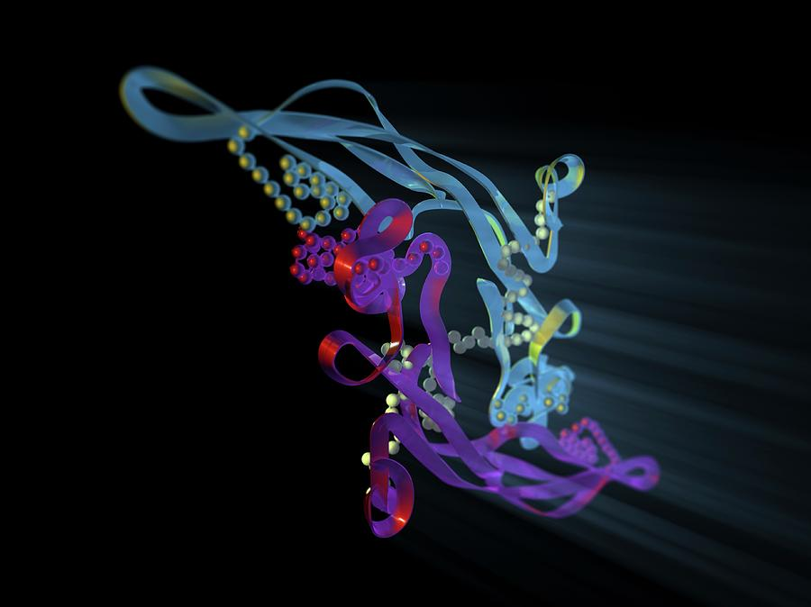

About Us

At Valfard Therapeutics, we are redefining the treatment of diabetic foot ulcers (DFUs) by addressing the root cause rather than just managing symptoms. Our enzyme-responsive biomaterial technology delivers controlled, sustained release of TGF-β, promoting faster healing, reducing amputations, and setting a new standard in DFU care.